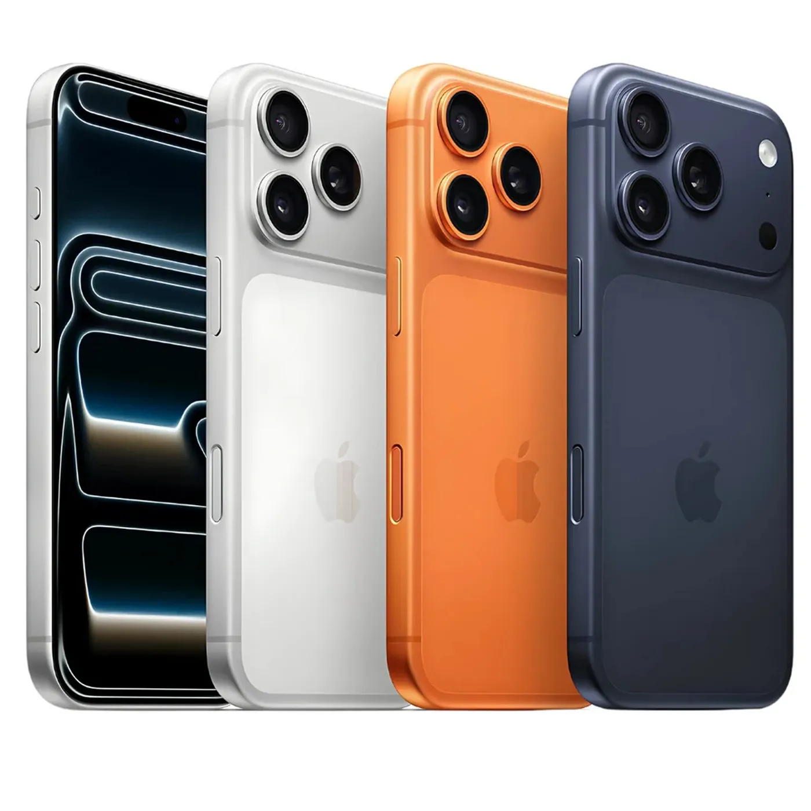

iPhone 17 Pro vale a pena? Análise completa do smartphone premium da Apple
📅 Publicado em 12/07/2026
O iPhone 17 Pro faz parte da geração mais recente de smartphones da Apple e chega com foco em desempenho, fotografia e recursos voltados para quem busca uma experiência premium. Equipado com o chip A19 Pro, tela Super Retina XDR com ProMotion e um conjunto avançado de câmeras, ele foi desenvolvido para atender desde usuários comuns até criadores de conteúdo. Mas será que ele realmente vale o investimento? Nesta análise, reunimos as principais informações oficiais para ajudar você a tomar uma decisão.
Design e Construção
O iPhone 17 Pro mantém o acabamento premium característico da Apple, com materiais de alta qualidade e excelente sensação de robustez. Além do visual elegante, o aparelho conta com proteção IP68 contra água e poeira, oferecendo maior tranquilidade para o uso diário.
Tela
A tela Super Retina XDR é um dos pontos fortes do aparelho. Com tecnologia ProMotion de até 120 Hz, a navegação fica extremamente fluida, enquanto o alto brilho e o contraste tornam a experiência excelente para vídeos, jogos e leitura, mesmo em ambientes externos.
Desempenho
O chip Apple A19 Pro entrega potência para qualquer tarefa. Jogos pesados, edição de fotos e vídeos, multitarefa e aplicativos profissionais funcionam com excelente desempenho. Outro ponto positivo é o histórico da Apple de oferecer atualizações de software por muitos anos, aumentando a vida útil do aparelho.
Cameras
O iPhone 17 Pro traz um conjunto de três câmeras de 48 MP, incluindo lente teleobjetiva aprimorada, oferecendo grande versatilidade para fotos e vídeos. A Apple continua sendo referência na gravação de vídeos, e o aparelho também se destaca em fotografia noturna, retratos e gravações em alta resolução.
Bateria
A autonomia foi aprimorada em relação às gerações anteriores e deve atender bem um dia inteiro de uso para a maioria dos usuários. O tempo de bateria varia conforme o tipo de uso e as configurações escolhidas.
Especificações
- Tela Super Retina XDR OLED de 6,3 polegadas.
- Tecnologia ProMotion com taxa de atualização de ate 120 Hz.
- Chip Apple A19 Pro.
- Armazenamento a partir de 256 GB.
- Sistema operacional iOS 26.
- Cameras de 48 MP.
Pontos positivos
- ✅ Excelente desempenho.
- ✅ Tela OLED de alta qualidade com 120 Hz.
- ✅ Câmeras entre as melhores do mercado.
- ✅ Construçao Premium.
Pontos negativos
- ❌ Preço elevado.
- ❌ Sem expansão por cartão MicroSD.
- ❌ Alguns acessórios podem ser vendidos separadamente.
Conclusão
O iPhone 17 Pro é indicado para quem procura um smartphone topo de linha para fotografia, gravação de vídeos, jogos, produtividade e uso por vários anos. Se você busca um dos smartphones mais completos da Apple e pretende ficar bastante tempo com o mesmo aparelho, o iPhone 17 Pro é uma excelente escolha. Por outro lado, quem já possui um modelo Pro muito recente pode comparar as novidades antes de decidir pela troca.
Onde comprar
Transparência
Esta análise foi elaborada com base em informações oficiais, especificações técnicas e materiais disponibilizados publicamente. O Análise Certa busca fornecer informações claras e confiáveis para ajudar na decisão de compra.